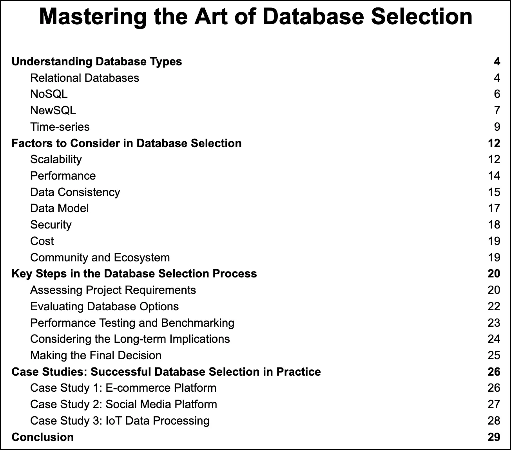

The success of a software application often hinges on the choice of the right databases. As developers, we’re faced with a vast array of database options. It is crucial for us to understand the differences between these options and how to select the ones that best align with our project’s requirements. A complex application usually uses several different databases, each catering to a specific aspect of the application’s needs.

In this comprehensive three-part series, we’ll explore the art of database selection. We’ll arm ourselves with the knowledge necessary to make informed decisions when faced with the challenge of choosing databases for various components of our application. We will dive into the process of database selection, examining the various types of databases, discussing factors that influence database performance and cost, and guiding ourselves toward the best choices for our application while balancing essential tradeoffs.
Throughout the series, we’ll outline the key steps in the database selection process and review case studies that showcase successful database selection in practice. By the end of this series, we aim to empower ourselves with the knowledge and confidence needed to master the art of selecting the right combination of databases for our complex applications.
SQL vs. NoSQL. Source

Understanding Database Types
To make the best decision for our projects, it is essential to understand the various types of databases available in the market. In this section, we explore the key characteristics of different database types, including popular options for each, and compare their use cases.

Relational Databases
Relational databases are based on the relational model, which organizes data into tables with rows and columns. These databases have been the standard choice for many applications due to their robust consistency, support for complex queries, and adherence to ACID properties (Atomicity, Consistency, Isolation, Durability). Key features and benefits of relational databases include:
-
Structured data organization: Data in relational databases is stored in tables with a predefined schema, enforcing a consistent structure throughout the database. This organization makes it easier to manage and maintain data, especially when dealing with large amounts of structured data.
-
Relationships and referential integrity: The relationships between tables in a relational database are defined by primary and foreign keys, ensuring referential integrity. This feature allows for efficient querying of related data and supports complex data relationships.
-
SQL support: Relational databases use Structured Query Language (SQL) for querying, manipulating, and managing data. SQL is a powerful and widely adopted language that enables developers to perform complex queries and data manipulations.
-
Transactions and ACID properties: Relational databases support transactions, which are sets of related operations that either succeed or fail as a whole. This feature ensures the ACID properties – Atomicity, Consistency, Isolation, and Durability – are maintained, guaranteeing data consistency and integrity.
-
Indexing and optimization: Relational databases offer various indexing techniques and query optimization strategies, which help improve query performance and reduce resource consumption.
Relational databases also have some drawbacks:
-
Limited scalability: Scaling relational databases horizontally (adding more nodes) can be challenging, especially when compared to some NoSQL databases that are designed for distributed environments.
-
Rigidity: The predefined schema in relational databases can make it difficult to adapt to changing requirements, as altering the schema may require significant modifications to existing data and applications.
-
Performance issues with large datasets: As the volume of data grows, relational databases may experience performance issues, particularly when dealing with complex queries and large-scale data manipulations.
-
Inefficient for unstructured or semi-structured data: Relational databases are designed for structured data, which may not be suitable for managing unstructured or semi-structured data, such as social media data or sensor data.
Popular relational databases include MySQL, PostgreSQL, Microsoft SQL Server, and Oracle. Each of these options has its unique features, strengths, and weaknesses, making them suitable for different use cases and requirements. When considering a relational database, it is essential to evaluate the specific needs of the application in terms of data consistency, support for complex queries, and scalability, among other factors.

NoSQL
NoSQL databases were developed as a response to the limitations of relational databases, particularly in terms of scalability, flexibility, and performance under certain conditions. Unlike relational databases, NoSQL databases do not strictly follow the relational model or traditional table-based storage. They can store data in various formats, which makes them suitable for a diverse range of use cases. NoSQL databases can be broadly categorized into four subtypes, each with its unique characteristics:
-
Document-based databases store data in semi-structured documents, such as JSON or BSON. This format provides greater flexibility in data modeling. It allows for more dynamic schemas that can evolve as the application’s requirements change. Document-based databases are well-suited for applications that deal with hierarchical or nested data structures, such as content management systems, e-commerce platforms, and analytics applications. Some popular document-based databases include MongoDB and Couchbase.
-
Column-based databases, also known as wide-column stores or column-family stores, organize data in columns rather than rows. This structure optimizes column-based queries, providing improved compression and better read performance. Column-based databases are designed for applications that need to store and query large amounts of data across many nodes, making them a popular choice for big data and analytics applications, as well as applications with high write and read workloads. Some well-known column-based databases are Apache Cassandra and HBase.
-
Key-value stores provide a simple and efficient way to store data as key-value pairs. These databases are ideal for use cases that require high-speed reads and writes, as well as horizontal scalability. Key-value stores can serve as caching layers, session stores, or configuration storage, among other uses. They are often used in applications where performance and low-latency access to data are critical, such as gaming platforms, real-time analytics systems, and recommendation engines. Examples of popular key-value stores include Redis and Amazon DynamoDB.
-
Graph databases focus on storing data as nodes and edges in a graph. It enables efficient processing of complex relationships, traversals, and graph-based algorithms. This type of database is particularly useful for applications that involve intricate relationships between entities, such as social networks, fraud detection systems, and recommendation engines. Graph databases provide powerful querying capabilities for traversing and analyzing interconnected data, making them an attractive choice for these use cases. Neo4j and Amazon Neptune are examples of graph databases.
It’s important to note that NoSQL databases have their own set of weaknesses:
-
Lack of standardization: Unlike relational databases, which follow standardized SQL query language, NoSQL databases often use their own query languages or APIs. This can lead to increased learning curves and difficulties when migrating between different NoSQL databases or integrating them with other systems.
-
Weaker consistency: Many NoSQL databases employ eventual consistency models to achieve higher performance and availability. While this may be suitable for some applications, it can cause issues in cases where strict data consistency is required.
-
Limited support for complex queries and transactions: Some NoSQL databases, such as key-value stores and column-based databases, are not designed for complex queries or multi-record transactions. This can make it challenging to implement certain business logic or reporting requirements directly within the database.

Each NoSQL subtype has its strengths and weaknesses, making them suitable for different applications depending on the specific requirements. When considering a NoSQL database, it is important to evaluate the specific needs of the application in terms of scalability, data modeling, query patterns, and performance to determine the best fit.
NewSQL
NewSQL databases are a modern approach to combining the strengths of both relational and NoSQL databases. They maintain the relational model, ACID properties, and SQL support, while offering improved scalability, distributed architecture, and performance enhancements commonly associated with NoSQL databases. NewSQL databases are designed to address the challenges of modern applications, such as handling large-scale, distributed, and highly concurrent workloads, without sacrificing data consistency and integrity.
-
Distributed architecture: NewSQL databases are distributed. They leverage data partitioning and replication across multiple nodes or even data centers. This architecture allows for better fault tolerance, high availability, and global scale.
-
Scalability: NewSQL databases can scale horizontally. They accommodate increased workloads by adding more nodes to the system. This feature makes them suitable for applications that demand strong consistency and the ability to handle a high volume of transactions or users.
-
Concurrency control: Advanced concurrency control mechanisms, such as multi-version concurrency control (MVCC) or optimistic concurrency control, are used by NewSQL databases. These mechanisms allow efficient handling of a large number of simultaneous transactions. This is crucial for modern applications with high concurrency requirements.
-
SQL support and compatibility: Retaining the familiar SQL language for querying and manipulating data, NewSQL databases simplify the learning curve for developers. They often provide compatibility with existing relational databases and tools, easing the migration process.
It’s important to consider NewSQL’s drawbacks:
-
Complexity: The distributed architecture and advanced features of NewSQL databases can introduce additional complexity in terms of configuration, maintenance, and troubleshooting compared to traditional relational databases.
-
Vendor lock-in: Some NewSQL databases are offered as managed services by specific vendors, which may lead to vendor lock-in and limit the flexibility to switch providers.
-
Lack of maturity: As a relatively new technology, NewSQL databases may lack the maturity and extensive ecosystem of traditional relational databases, which could result in limited support, documentation, and community resources.
Popular NewSQL databases include CockroachDB, Google Spanner, and TiDB. Each option offers unique features and capabilities, making them suitable for different use cases and requirements. When considering a NewSQL database, it is essential to evaluate the specific needs of the application in terms of scalability, data consistency, performance, and developer familiarity to determine the best fit.

Time-series
Time-series databases specialize in handling time-stamped data, which is characterized by its sequential nature and time-based ordering. Time-series data is common in various domains, such as financial markets, IoT, and monitoring systems. These databases are designed to optimize the storage, retrieval, and analysis of time-stamped data. They offer features that cater specifically to the unique challenges presented by time-series data.
-
High write and query performance: Time-series databases are optimized for handling high-velocity data streams, which require efficient write performance. They also provide fast query performance, allowing for real-time or near-real-time analysis of time-series data.
-
Data compression: Due to the large volume of data generated by time-series workloads, time-series databases use various data compression techniques to reduce storage requirements and improve query performance.
-
Time-based data retention policies: Time-series databases enable easy management of data retention policies based on time. This feature allows for automatic data aging, which helps to maintain storage efficiency and ensure data relevance.
-
Built-in time-series functions: Time-series databases typically include built-in functions and tools to facilitate time-series data analysis, such as aggregation, downsampling, and forecasting. These functions simplify the process of working with time-series data and can help developers to build more efficient applications.
-
Scalability: Time-series databases are designed to scale horizontally, allowing them to handle large volumes of data and high ingestion rates. This feature is essential for applications that need to store and analyze vast amounts of time-series data, such as IoT applications or monitoring systems.
Popular time-series databases include InfluxDB and TimescaleDB. Each of these options offers unique features and capabilities tailored to time-series data management and analysis, making them suitable for different use cases and requirements. When considering a time-series database, it is essential to evaluate the specific needs of the application in terms of data ingestion rate, query performance, data retention, and scalability.

To compare database types and their use cases, we must consider various factors, such as the type of data they handle, their scalability, performance, consistency, and complexity. For example, relational databases are generally better for applications requiring strict data consistency and complex queries, while NoSQL databases are more suitable for projects dealing with large volumes of unstructured data or requiring high scalability.
In the next section, we will dive deeper into the factors we need to consider when selecting a database, including scalability, performance, data consistency, data model, security, cost, and community support. By understanding the strengths and weaknesses of each database type and aligning them with our project requirements, we can make an informed decision that will help ensure the success of our software development efforts.